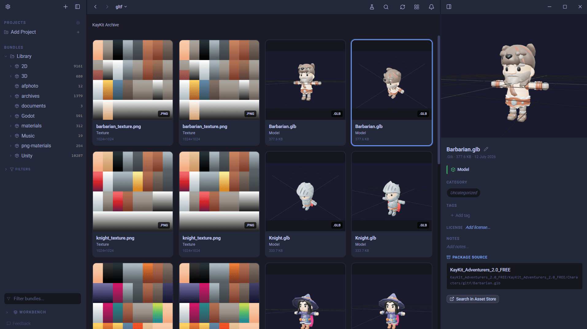
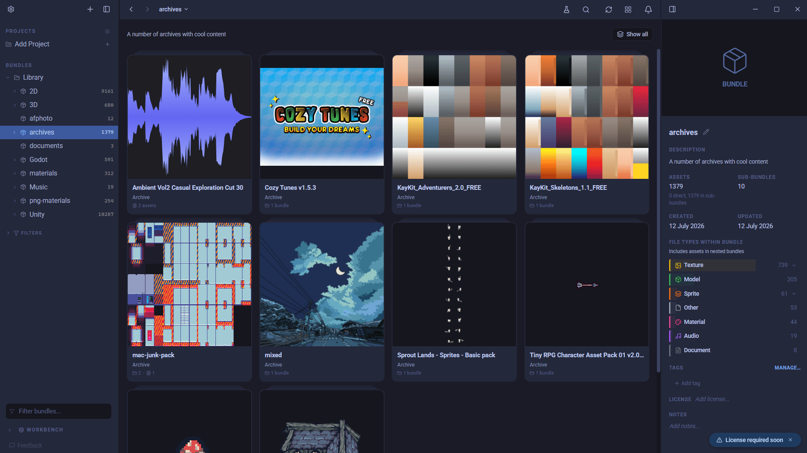
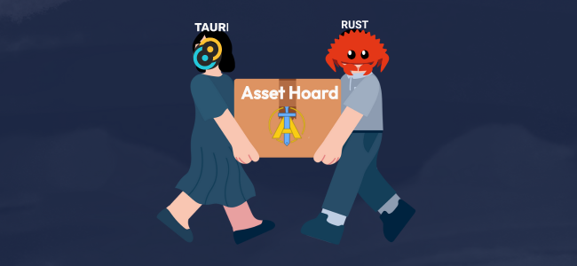

You bought the bundle. Now find one tree.
Humble, itch.io and Fanatical asset bundles are the cheapest way to build a game asset library and the fastest way to lose one. Here is how to keep yours findable.

Unreal vs Unity: which engine fits your game?
Unreal vs Unity, compared for indie developers in 2026. Visual fidelity, 2D and mobile, iteration speed, pricing and royalties, plus who each engine suits.

GameMaker vs Godot: the best engine for 2D?
GameMaker vs Godot, compared for 2D game development in 2026. Licensing, scripting, workflow, 3D and track record, plus which 2D engine you should pick.

Godot vs Unity: which should you actually pick?
Godot vs Unity, compared for indie developers in 2026. Licensing, 2D and 3D, scripting, the asset ecosystem and mobile, plus who each engine is really for.

What game engine should I start with?
The best game engine for beginners in 2026, explained simply. How to choose between Godot, Unity, Unreal, GameMaker and the no-code tools for your first game.

Where to get free sound effects in 2026
22 places to find free sound effects and audio for your game in 2026. Big CC0 libraries, professional bundles, the BBC archive, and generators for making your own retro bleeps from scratch.

Look inside any archive, without unzipping it
How AssetHoard indexes and previews the contents of zip, unitypackage, tar.gz and rar archives in place, without extracting a single file to disk.

How to Organise Unity Asset Store Downloads
A practical guide to managing your growing Unity Asset Store library, from folder structure to dedicated tools.

What is a digital asset management system for game developers?
Digital asset management (DAM) keeps every game asset findable in one place. Here's what that means for game devs, and what to look for in one.

Stop unzipping everything: browse inside archives without extracting
The next release lets you open zip, rar, and tgz files right in your library and preview what's inside, without unpacking a thing.

How to be a game developer when you can't draw
You don't need to be an artist to ship a good-looking game. Here's how to build one with asset packs, a few texture swaps, some lighting, and a genre that plays to your strengths.

Windows protected your PC: fixing the SmartScreen warning on your indie game
Ship your game on itch.io or by direct download and players hit the blue 'Windows protected your PC' warning. Why it happens, why Steam games avoid it, and how to fix it.

You don't own your software anymore
Every app is now a subscription and your files live on someone else's server. Here's the case for local-first, one-time purchase software you actually own.

Reading Paint.NET Files Without Paint.NET
How we added thumbnails and metadata for .pdn files using a trick the Windows shell extension already relies on, and what we deliberately left on the table.
CC0, CC-BY, MIT: A Game Developer's Guide to Asset Licences
A plain guide to the licences attached to game assets, what each one actually requires, and how to keep track of attribution before it becomes a problem.

Parsing Godot .tres files and walking the resource graph
How AssetHoard parses Godot resource files, resolves cross-references, and reconstructs the res:// folder layout on drag-out so materials work the moment they land in your project.

Best Offline Asset Manager for Indie Developers
A look at offline asset managers for game developers, and how to pick one that handles engine-specific formats.
Why your pixel art looks blurry (and how to fix it)
Most asset tools blur pixel art by default. Here is why it happens, what proper pixel rendering looks like, and how to stop fighting your tools.

PBR vs ORM: Understanding the Difference
One is a lighting model. The other is how you pack some of its textures. Here is what that means across Unity, Unreal, Godot and Blender.
Eagle.cool Alternative for Game Developers
Eagle is a great visual organiser, but it wasn't built for game assets. Here's what to look for if you're a game developer.

How I Manage 100,000+ Game Assets Without Losing My Mind
Humble Bundle packs, asset store purchases, and indie artist downloads pile up fast. Here is how I stopped drowning in folders and started actually finding what I need.

Artist Spotlight: Tesseract Assets
We chat with Shaoul from Tesseract Assets about 3D props, weapons, stylised environments, and the invisible work that makes game assets actually work in-engine.

When 120,000 Files Meet Tauri: A Story of IPC, Rust, and Hard-Won Performance
How we optimised AssetHoard to handle massive asset libraries without freezing your entire computer.

The 15 Best Free HD Game Asset Sites in 2026
Hand-picked HD game asset sites for 2026. 2D sprites, 3D models, PBR textures, audio. Mostly CC0, no sign-up, free for commercial use.

Welcome to AssetHoard: Your Digital Dragon's Treasure Cave
We built the asset manager we wished existed. No accounts, no subscriptions, no uploading your files to someone else's server. Just you and your hoard.